Welcome to the NativeScript Workshop!
To get started you'll need the following pre-requisites:
NativeScript is a framework for building native iOS and Android apps using JavaScript and CSS. NativeScript renders UIs with the native platform’s rendering engine, no WebViews, resulting in native-like performance and UX.
NativeScript provides a best-of-both-worlds development experience. Our cross-platform JavaScript modules give you the convenience of writing iOS and Android apps from a single JavaScript code base, while our runtimes give you the power of accessing native APIs, SDKs, and frameworks when you need them—all without needing to open Xcode or Android Studio. NativeScript was created and is supported by Telerik.
To learn more about how NativeScript works, check out this quick 3-minute video.
The NativeScript Playground is a browser-based environment for developing simple NativeScript apps. It’s a great place to get started learning NativeScript, as you can develop apps without needing to install the various SDKs and tools needed for native iOS and Android development. All you need is your browser, and an Android or iOS mobile device connected to the internet to get started.
In this workshop, we'll be using the NativeScript Playground to quickly prototype an app. It's a powerful tool, and we believe you'll like this approach because you don't need to install anything on your computer to get started.
In this workshop you'll learn how to build iOS and Android mobile apps using NativeScript. Throughout the workshop, you'll be building a SpaceX Launch Information app that uses the SpaceX launch API. The app will list past and future SpaceX launches, and allow you to learn more about each launch.
Key concepts and take aways:
You can find additional workshop materials and presentation content at the locations below:
The first place you can go to learn more about NativeScript is by reading our book, The NativeScript Book, available FREE from Telerik.
There is also a huge community around NativeScript, we've compiled a brief list of additoinal resources below.
A portion of this workshop was inspired by a fun weekend project Mike built with his son. We're really into building robots right now, so we built a carboard robot with his tablet as the head. I ended up writing a quick NativeScript soundboard app so the robot could talk back to him.
In this chapter, you'll learn how to use the NativeScript Playground to get started quickly, build your first app, and run the app on your phone.
The NativeScript Playground is a browser-based environment for developing simple NativeScript apps. It’s a great place to get started learning NativeScript, as you can develop apps without needing to install the various SDKs and tools needed for native iOS and Android development. All you need is your browser, and an Android or iOS mobile device connected to the internet to get started.
Now that you know about the NativeScript Playground, let's get started.
In this exercise, you'll explore the NativeScript Playground and learn how to run an app built in the Playground on your mobile device.
Before we get started, you'll need to install 2 apps on your mobile device:
In your your respective App Store (Google Play or Apple App Store), locate both apps and install them on your mobile device. If you're haivng troubel finding the app, use the links above.
Next, navigate to the NativeScript Playground in your browser.
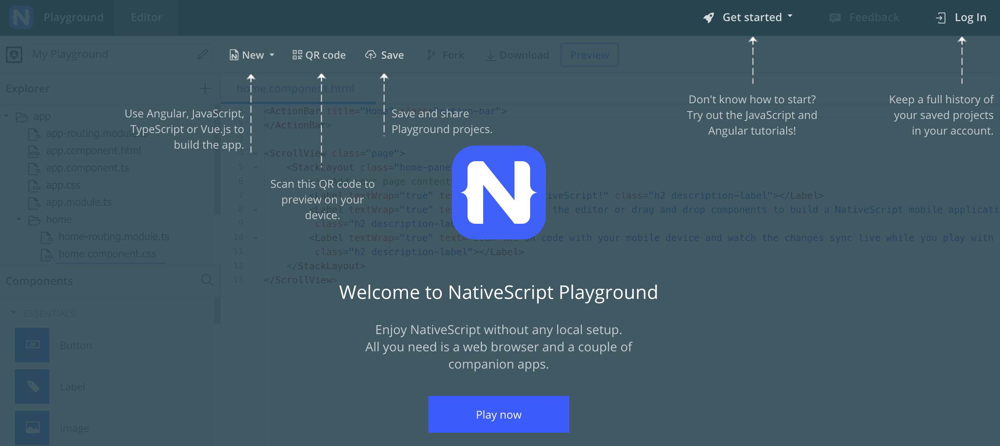
Click "Play now" to begin.
After clicking "Play now" a QR code will appear, and you'll be notified that your Playground is ready:
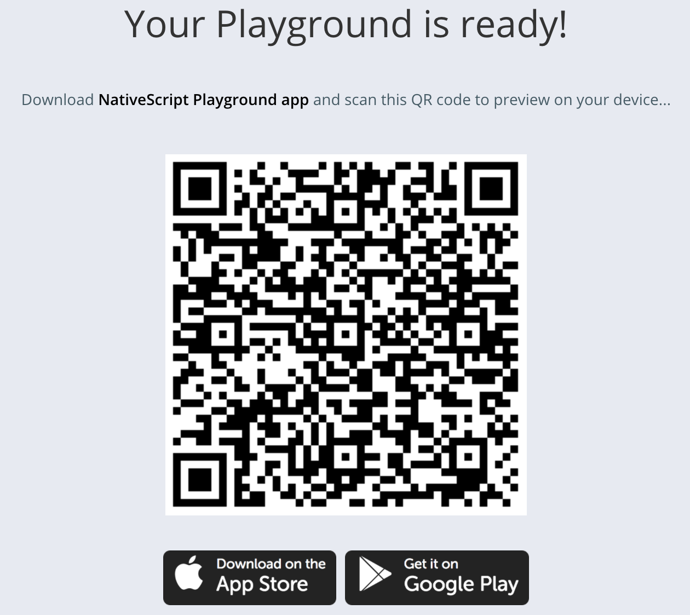
Open the NativeScript Playground app on your mobile device, and select the "Scan QR code" action.
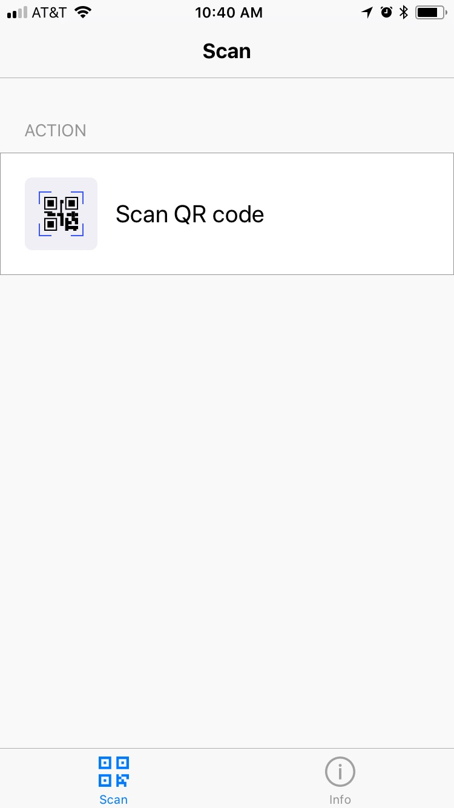
Using the QR code scanner in the NativeScript Playground app, scan the QR code displayed on the NativeScript Playground website.
NOTE: Do not scan the QR code on this page. Scan the QR code in the Playground.
After scanning the QR code, the NativeScript Playground app will open the NativeScript Preview app and dynamically load the code from the Playground Website and launch a native mobile app on your mobile device!
When all of this happens, you should see this on your mobile device:
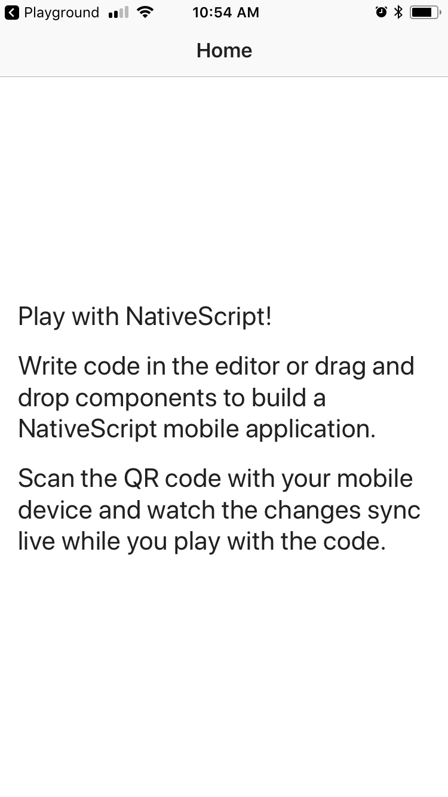
...and you should also see the following on the Playground website:
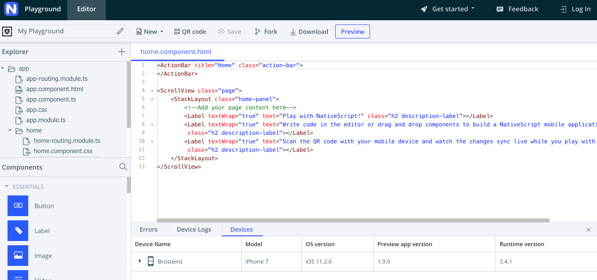
Congratulations! You just used the Playground to write your first mobile app with Angular. Then, you ran the app on your phone. That was fast - and you didn't need to install anything on your computer!
OK, we know you didn't have to do much of anything to write this app, but we promose you'll learn more and build something more advanced during the workshop.
Before we move on, let's take a minute to understand what happened and explore the NativeScript Playground UI.
The NativeScript Playground is a web-based IDE. You write your Angular code in the browser, then save it. When you scan the QR code, the NativeScript Playground app coordinates with the NativeScript Preview app and reaches out to the Playground website. The code is pulled down, loaded into the NativeScript runtime in the Preview app, and renders native iOS/Android UI on your mobile device.
Now that you've learned how the Playground works, let's explore the UI.
As you'll notice, the Playground UI is similar to a basic IDE, like Visual Studio Code, Visual Studio, Eclipse, or Web Storm.
On the left is a file explorer, where you can add or update files and folders to your mobile app:
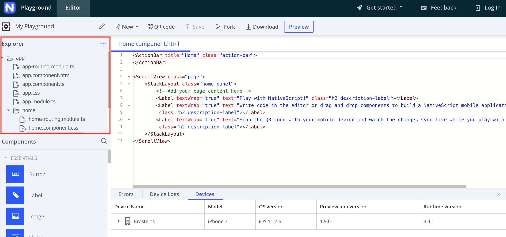
The large central area is a file editor with Intellisense:
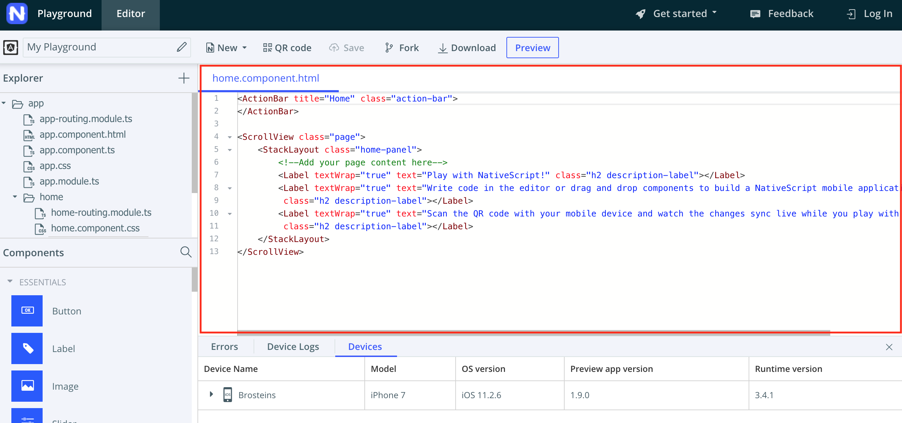
The bottom central area shows you which mobile devices are connected to the Playground and device/error logs for debugging purposes.
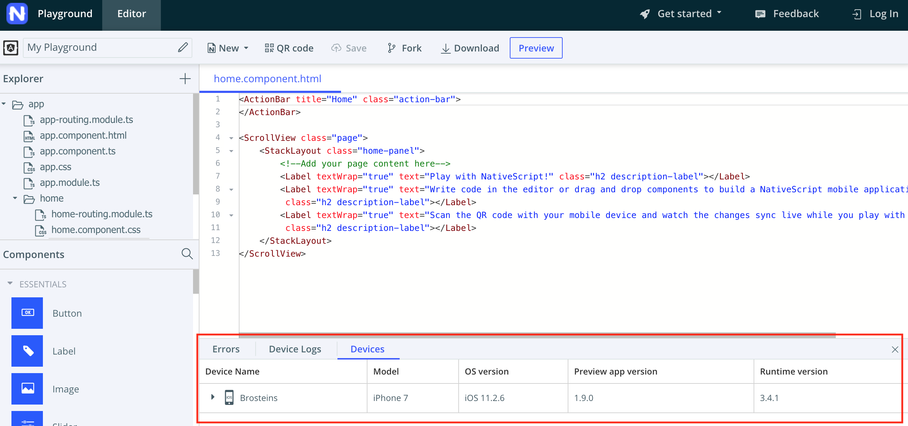
Connected Devices Hold on...the Playground shows you connected devices. Yes, that's right. When your mobile device connects to the Playground, it registers itself with the website. You can see a variety of information about a connected device.
Pretty cool, right? Well, there's somethign even cooler about the Playground: LiveSync.
LiveSync is a technology that syncs changes made in the Playground down to your mobile device in real time. This means that you can quickly make changes to your app in the Playground and the changes will be instantly pushed to connected devices. If you've ever done mobile development before, you'll understand how useful this is - getting feedback from your code running on real mobile devices usually takes time, but with LiveSync, it's instantaneous.
Now that you've learned about LiveSync, let's see it in action.
In this exercise, you'll learn how to use LiveSync by interacting wth the Playground website and seeing the app on your mobile device update automatically.
Before we get started with this exercise, be sure to have your Playground app loaded in the NativeScript Preview app.
If your app isn't running, press the "QR code" button in the Playground website, and re-scan the code on your mobile device:
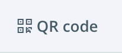
Now that your app is running on your mobile device, let's make a change.
Start by finding the home.component.html file on the left, then open it for editing by clicking on it:
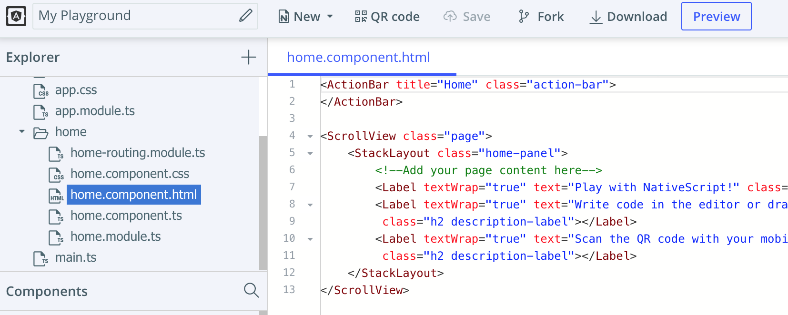
You'll notice some markup in the home.component.html file. It's not important for you to understand the markup right now, but you should know that any markup you place in this file will affect the native UI generated on the home page of your app.
Even though you may not understand all of the markup, you can probably guess at the meaning on most tags. NativeScript UI markup is can be easy to understand, because it's similar to HTML.
For example, look at the markup that displays a label on the screen that contains the text "Play with NativeScript!":
<Label
textWrap="true"
text="Play with NativeScript!"
class="h2 description-label">
</Label>
Let's change the text in the home.component.html file.
Change the text that reads "Play with NativeScript!" to somethings else. feel free to use the code snippet below, or your own text.
<Label
textWrap="true"
text="Using LiveSync is easy and convenient!"
class="h2 description-label">
</Label>
After making this change, press the "Save" button:
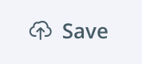
Then, look back at your mobile device, and watch the UI of the app change:
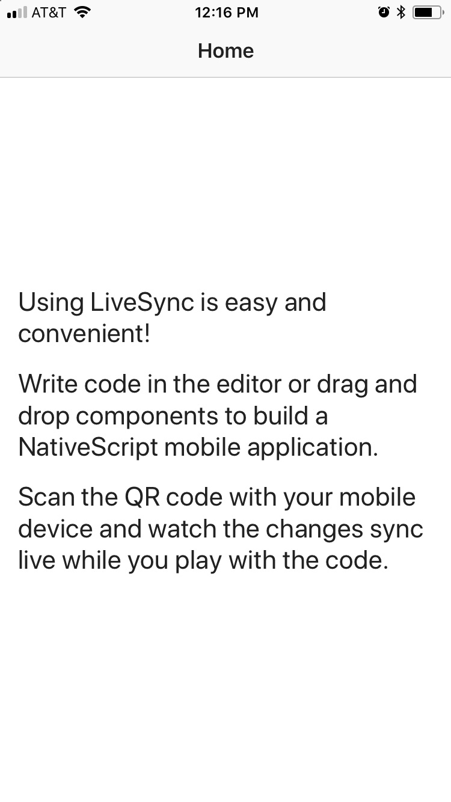
Easy and cool!
We'll continue to rely on LiveSync throughout this workshop to get instant feedback in our apps.
Let's continue on and get our Playground app started.
In the final portion of chapter 1, you'll be cleaning up the default Angular template in the Playground to get it ready for the SpaceX app. Let's jump in!
In this exercise, you'll reorganize files and folders in the Playground website to get ready for the SpaceX app.
You may be wondering why we're cleaning up the default Playground template. The default Playground template works well, but doesn't structure app pages into a "views" folder (which is a preference of ours).
Let's get started by removing the home folder. Find it in the Explorer, select it, click the "...", and select the "Delete" option:
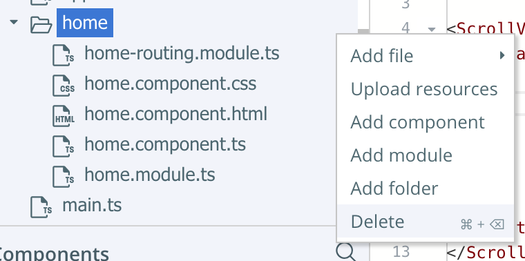
Confirm the delete:
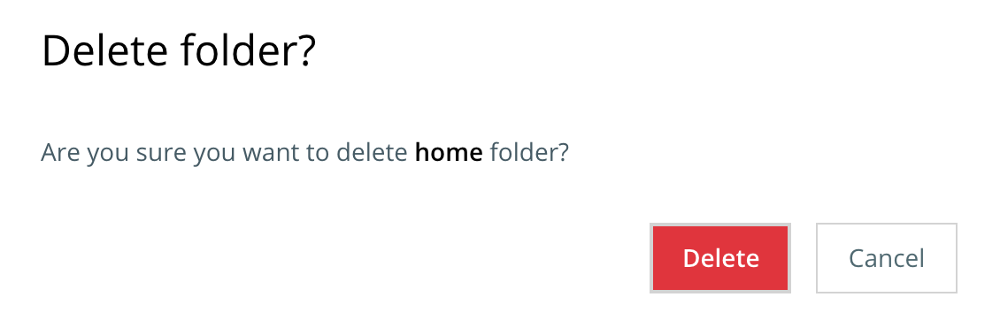
Add a folder named "views" to the "app" folder:
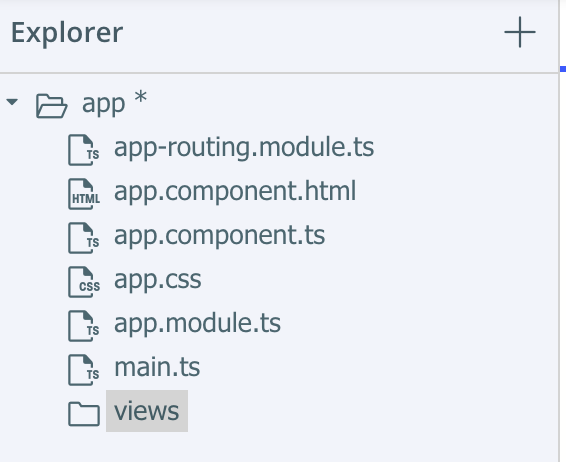
Now, create a "home" folder inside of the "views" folder:
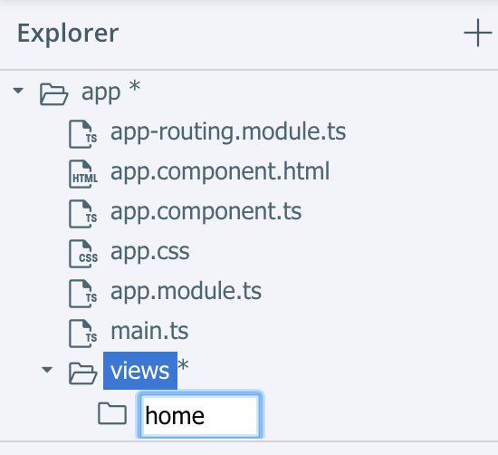
Then add the "home" component by selecting the "..." next to the "home" folder and select "add component". Name the component "home":
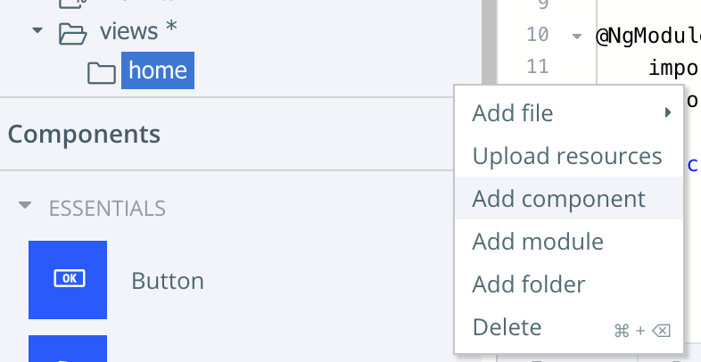
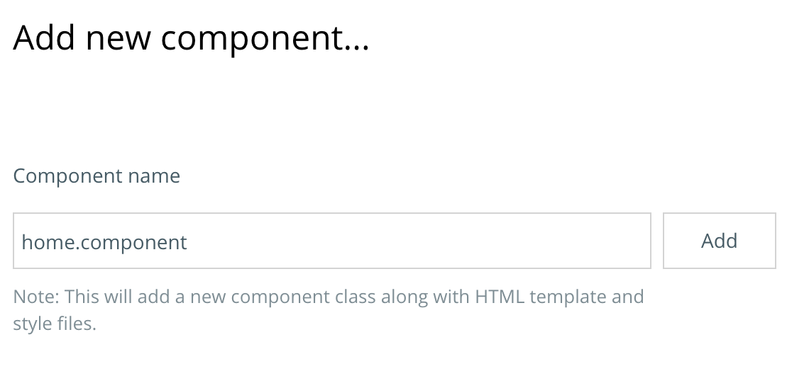
By using the "add component" option, the Playground will scaffold a CSS, TypeScript, and HTML file for you automatically:
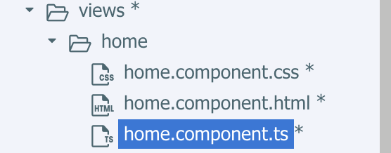
Next, let's add the home component to the app module. Open the app.module.ts file, and add a reference to the home component.
You can add the home component manually or copy/paste the code below.
import { NgModule, NgModuleFactoryLoader, NO_ERRORS_SCHEMA } from "@angular/core";
import { NativeScriptModule } from "nativescript-angular/nativescript.module";
import { AppRoutingModule } from "./app-routing.module";
import { AppComponent } from "./app.component";
import { HomeComponent } from "./views/home/home.component";
@NgModule({
bootstrap: [
AppComponent
],
imports: [
NativeScriptModule,
AppRoutingModule
],
declarations: [
AppComponent,
HomeComponent
],
schemas: [
NO_ERRORS_SCHEMA
]
})
export class AppModule { }
Lastly, update the app-routing.module.ts file to reflect the changes in the home component:
import { NgModule } from "@angular/core";
import { Routes } from "@angular/router";
import { NativeScriptRouterModule } from "nativescript-angular/router";
import { HomeComponent } from "./views/home/home.component";
const routes: Routes = [
{ path: "", component: HomeComponent },
{ path: "home", component: HomeComponent }
];
@NgModule({
imports: [NativeScriptRouterModule.forRoot(routes)],
exports: [NativeScriptRouterModule]
})
export class AppRoutingModule { }
You're finished. You replaced the default home component with a new home component located in the views folder.
Save your Playground project online and let LiveSync do it's work. If your app got disconnected from LiveSync, just re-scan your QR code to load it up.
When you launch your app, you should see a blank page with Home at the top:
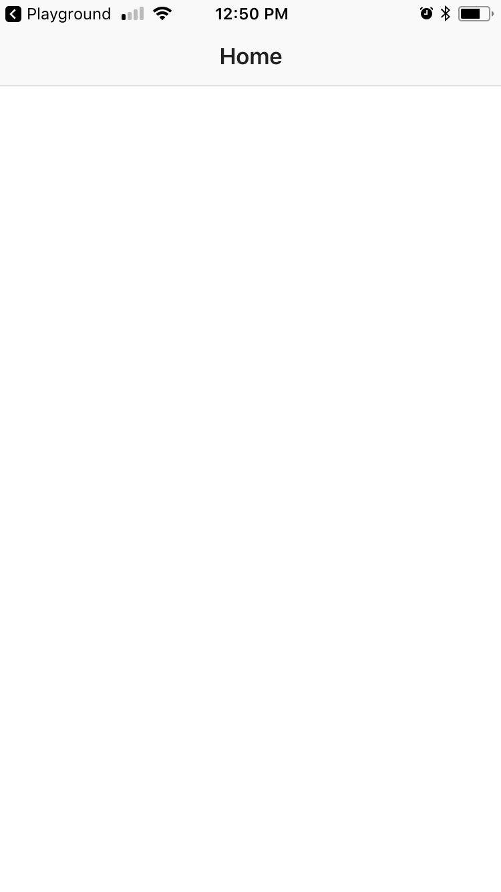
That concludes chapter 1. In the next chapter, you'll pick up from here, build out the home page, and learn about the various NativeScript UI components.
Now that you understand the basics of NativeScript and how the Playground you're ready to start creating your first (or maybe not your first) NativeScript app. Over the course of this chapter and the next few chapters you will be creating an app the reads and displays SpaceX flight data.
In this chapter will focus on designing the home page and learn to use the following NativeScript elements:
<Button><StackLayout><ScrollView>Before we go too much further, I need to introduce you to something called a layout. Layouts are UI elements (similar to the <Label /> element) that allow you to organize the UI of each page.
If you look at the home-component that you scaffolded in the previous chapter, you will see there is already code added to the home-component.html for you.
<ActionBar title="Home" class="action-bar">
</ActionBar>
<ScrollView class="page">
<StackLayout class="home-panel">
<!--Add your page content here-->
</StackLayout>
</ScrollView>
The ScrollView and StackLayout elements are two basic layout elements (we'll talk about the ActionBar in a later chapter). To display multiple elements on a page, you need to use a layout like the ScrollView or StackLayout and in most cases you will want to use both. The ScrollView functions exactly as you would expect, it makes the content inside of it scrollable. The StackLayout element organizes child elements vertically or horizonatally.
The
StackLayoutorganizes child elements stacked on top of each other vertically by default.
Now that we've talked about basic layouts, let's start designing the home view.
First thing is first, go ahead and remove the ActionBar element from home-component.html because you will not need this on the home view. After deleting the ActionBar your app should have a blank home view inside the NativeScript preview app.
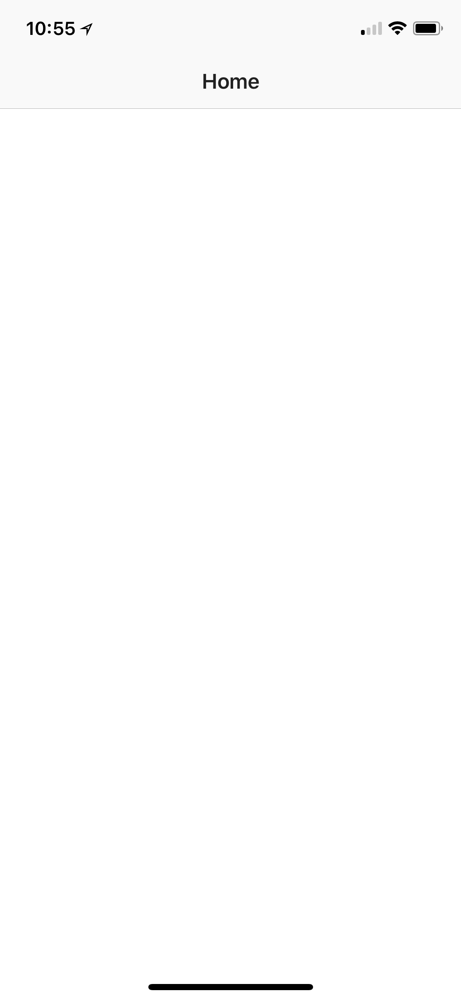
Next, let's create a class to style the home view called base to create a nice background image for our view. Add the base class to the home-component.css file (you can remove the existing home-panel class because you will not be using that).
.base {
background-image: url("https://raw.githubusercontent.com/mikebranstein/nativescript-spacex-workshop/master/app/views/home/spacex_home.png");
background-repeat: no-repeat;
background-size: contain;
background-color: black;
background-position: center;
}
Update the home-component.html to utilize your new base class.
<ScrollView class="base">
<StackLayout>
</StackLayout>
</ScrollView>
You app should now have a SpaceX background image in the preview app.
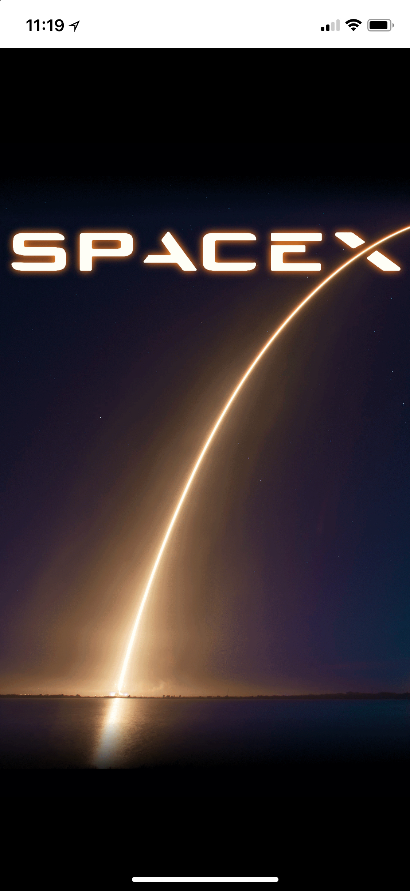
The last step in creating your home view is to add a button. Add a <Button> element inside of the <StackLayout> in the home-component.html file.
<ScrollView class="base">
<StackLayout>
<Button text="View Launches" class="btn btn-primary"></Button>
</StackLayout>
</ScrollView>
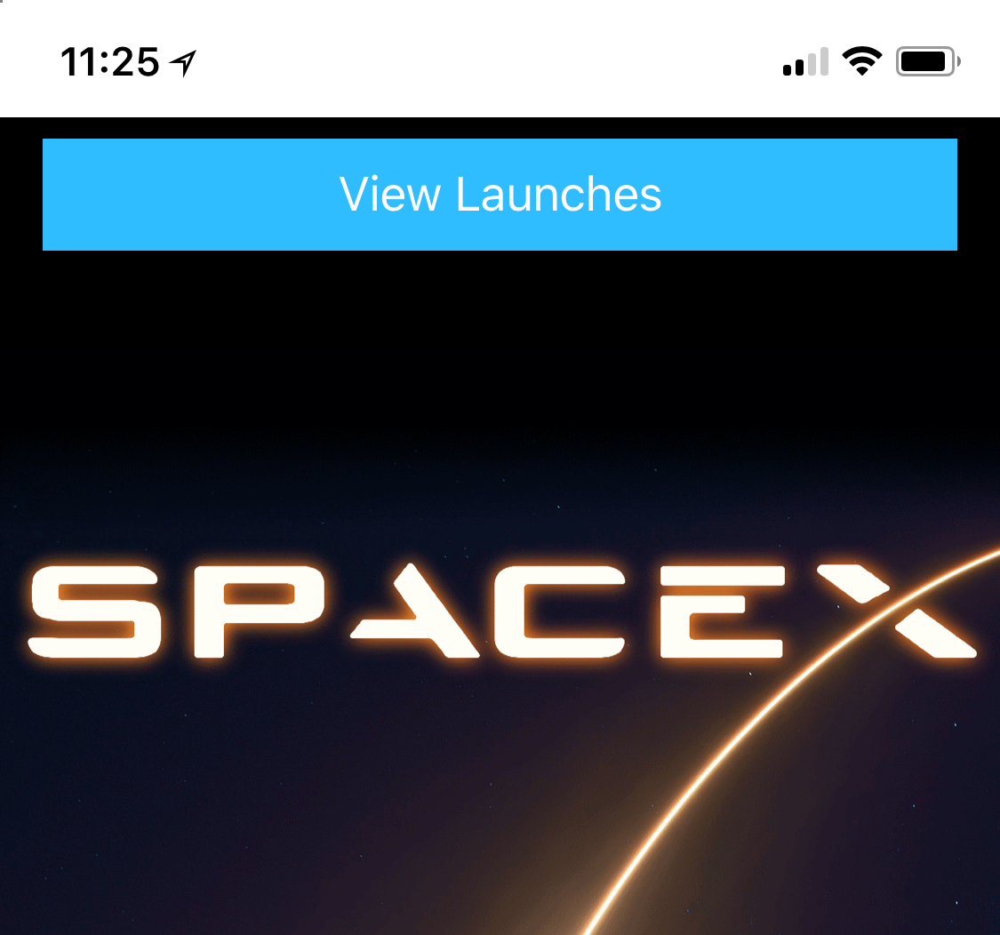
You may have noticed that you added the btn and btn-primary classes to the <Button> that you created and that the button styled blue. The btn and btn-primary classes are part of the NativeScript Themes that NativeScript provides to you out of the box to help style your app.
You're almost done with the home view. To make the home view look more complete we should move the button we added to the bottom of view so that it looks more polished. To complete the view, update the home-component.html to set the vertical alignment property of the <StackLayout>.
<ScrollView class="base">
<StackLayout verticalAlignment="bottom">
<Button text="View Launches" class="btn btn-primary"></Button>
</StackLayout>
</ScrollView>
Next add a margin to the <Button> element by updating the home-component.css file.
button {
margin-bottom: 100;
}
You should now be able to view the completed home view in the NativeScript preview app. In the next chapter you will work on implementing an event handler when the view launches button is tapped.
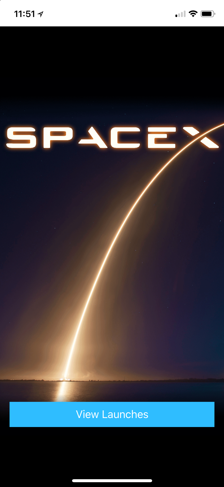
In this chapter, you'll be creating a page to view recent and upcoming SpaceX launches, then you'll learn how to navigate to and from it. You'll also learn about these NativeScript elements:
*ActionBar
In the last chapter, you refined the Home page of your app, and finished by adding a button labeled View Launches. In this section, you'll put that button to use.
But, before we can start using it, we'll need to create a page to navigate to. Let's start by adding the List page.
In this exercise, you'll be adding the List page.
In a previous chapter you learned how to add a page (or component) via the Playground. You'll recall it's straight-forward and can be done by clicking the 3 dots next to a folder and selecting the "Add component" option.
If you're comfortable doing this on your own, feel free to proceed by creating a folder underneath views named "list", then adding the List component. Your Playground should like this when you've finished:
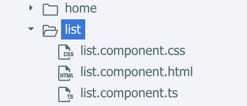
Don't forget! After adding the List component folder and files, you need to register it in the
app.module.tsfile.
If you can get this far on your own, skip to the end of this exercise. If not, it's ok. Let's review how to add a component.
The first step to creating a new page (or component) is to create a folder for the page. As you've learned earlier, Angular components should be placed inside a folder.
Start by adding a folder named "list" to the "views" folder. Click the 3 dots next to the "views" folder:
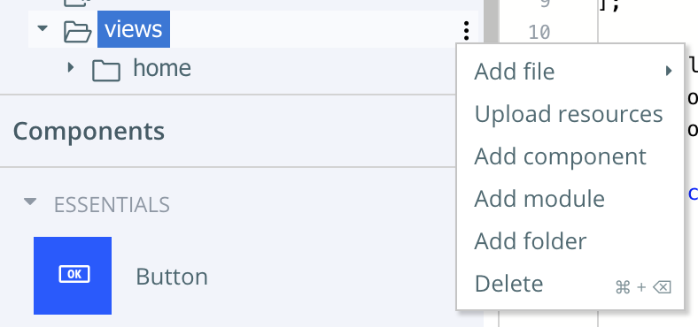
Select "Add folder" and name the folder "list":
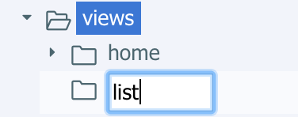
Then, create the "list" component by clicking the 3 dots next to the "list" folder, selecting "Add component":
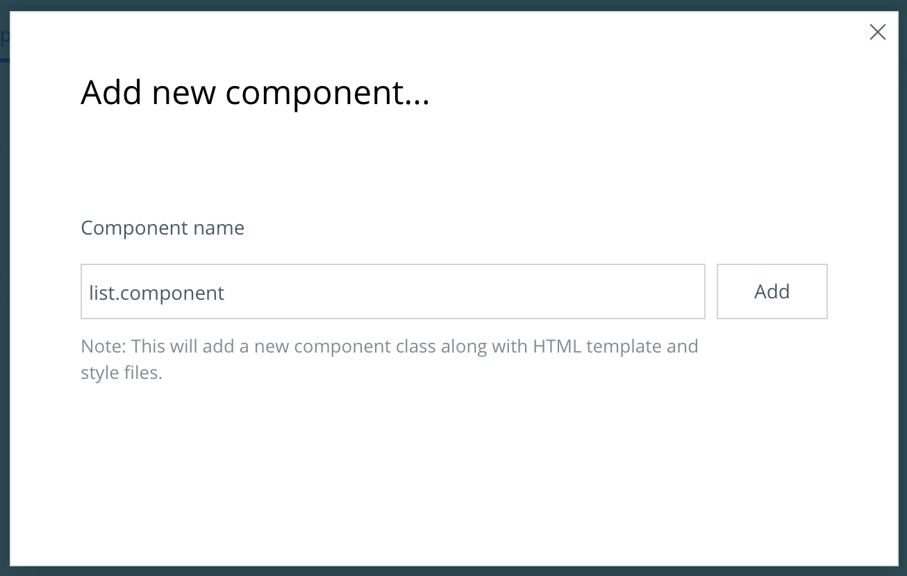
After adding the list component, you should see:
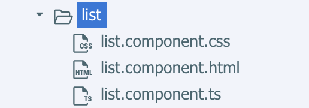
Finally, open the app.module.ts file and add the List component to the app module.
import { NgModule, NgModuleFactoryLoader, NO_ERRORS_SCHEMA } from "@angular/core";
import { NativeScriptModule } from "nativescript-angular/nativescript.module";
import { AppRoutingModule } from "./app-routing.module";
import { AppComponent } from "./app.component";
import { HomeComponent } from "./views/home/home.component";
import { ListComponent } from "./views/list/list.component";
@NgModule({
bootstrap: [
AppComponent
],
imports: [
NativeScriptModule,
AppRoutingModule
],
declarations: [
AppComponent,
HomeComponent,
ListComponent
],
schemas: [
NO_ERRORS_SCHEMA
]
})
export class AppModule { }
This concludes the exercise.
Now that you've created the List page, let's go back the button on the Home page and add navigation.
In this exercise, you'll be modifying the Home component's home.component.html and home.component.ts files to add navigation to the List page.
Let's start by opening the Home component's markup file (home.component.html).
In the last chapter, you added a button labeled "View Launches":
<Button
text="View Launches"
class="btn btn-primary">
</Button>
Add a tap event handler attribute to the button's markup. Don't worry if you don't understand what's going on right now, we'll explain it in a moment:
<Button
text="View Launches"
class="btn btn-primary"
(tap)="onViewLaunchesTap()">
</Button>
What did I just do? First, you need to know that every UI element in NativeScript has a variety of events. We don't have enough time to detail each event, and many of the events are intuitive. For example, buttons have "tap" events. In Angular, you can bind (or attach) a function to an event. By adding
(tap)="onViewLaunchesTap()"to the button element, you told your app to run theonViewLaunchesTap()function when the button is tapped.
Angular: Where to learn more Ok, we'll admit it - if you've used Angualr before, you'll know there's a lot more to the binding syntax we just covered. Unfortunately, in a short workshop, we don't have time to cover it in greater detail. If you'd liek to learn more, check out the Angular documentation.
NativeScript: Where to learn more If you'd like to learn more about the events available to various UI elements, check out the NativeScript documentation.
Let's get back to navigation...
Now that you've added the markup to bind the "View Launches" button to the onViewLaunchesTap(), let's add that function.
Open the home.component.ts file and replace the Home component code with the code below.
We know there's a lot of new code here, and we'll walk you through it in just a moment.
import { Component, OnInit } from "@angular/core";
import { RouterExtensions } from "nativescript-angular/router";
@Component({
selector: "home",
moduleId: module.id,
templateUrl: "./home.component.html",
styleUrls: ['./home.component.css']
})
export class HomeComponent implements OnInit {
constructor(
private routerExtensions: RouterExtensions,
private page: Page) {
}
ngOnInit(): void {
}
onViewLaunchesTap(): void {
this.routerExtensions.navigate(["list"]);
}
}
In this updated code, you'll notice 3 major changes:
import { RouterExtensions } from "nativescript-angular/router";private routerExtensions: RouterExtensionsonViewLaunchesTap() functionLet's walk through each of these one by one.
At the top of the Home component code, you imported an additional class named RouterExtensions from nativescript-angular/router. This class is a NativeScript-specific class for interacting with Angular's rounting/navigation system. There's not much more to learn about it, so just remember that you need to import it on every page that you'll need to use navigation.
And here's an extra secret...we've found that you'll need this in about every component you create.
The second addition to the Home component is passing an instance of the RouterExtensions class into the constructor:
constructor(
private routerExtensions: RouterExtensions) {
}
By adding this to the Home component's constructor, you have access to an instance of the RouterExtensions class from within the Home component class.
But, how does this work? You may be interested into how the Home component actually gets an instance of the RouterExtensions class. Angular's dependency injection does this heavy lifting. If you're not familiar with dependency injection, we recommend you read up on Angular's site.
The final change to the Home component is the addition of the onViewLaunchesTap() function:
onViewLaunchesTap(): void {
this.routerExtensions.navigate(["list"]);
}
As you'll recall, we imported the RouterExtensions class at the top of the file and injected an instance of RouterExtensions into the Home component. This allows us to access it via this.routerExtensions.
The RouterExtensions class has a function named navigate(), which takes an array of strings as a parameter. The first value in that array is the name of a registered route in our application.
Registered routes? A registered route is a key-value pair, where the key is a string (like "list") and the value is a component (like the List component we just created). You may have noticed we haven't "registered" the "list" route yet, but we'll do that next.
Now that you know how the navigate() function works, you can see that when the "View Launches" button is tapped, the onViewLaunchesTap() function navigates to the registered route named "list".
To close out our journey to navigate between pages / components, we need to register the "list" route and point it to our List component.
Open the app-routing.module.ts file, import the List component, and add an entry to the Routes array:
import { NgModule } from "@angular/core";
import { NativeScriptRouterModule } from "nativescript-angular/router";
import { Routes } from "@angular/router";
import { HomeComponent } from "./views/home/home.component";
import { ListComponent } from "./views/list/list.component";
const routes: Routes = [
{ path: "", component: HomeComponent },
{ path: "home", component: HomeComponent },
{ path: "list", component: ListComponent },
];
@NgModule({
imports: [NativeScriptRouterModule.forRoot(routes)],
exports: [NativeScriptRouterModule]
})
export class AppRoutingModule { }
Now that we've finished adding navigation, reload the app on your mobile device. When you tap the "View Launches" button, you should navigate to the List page/component:
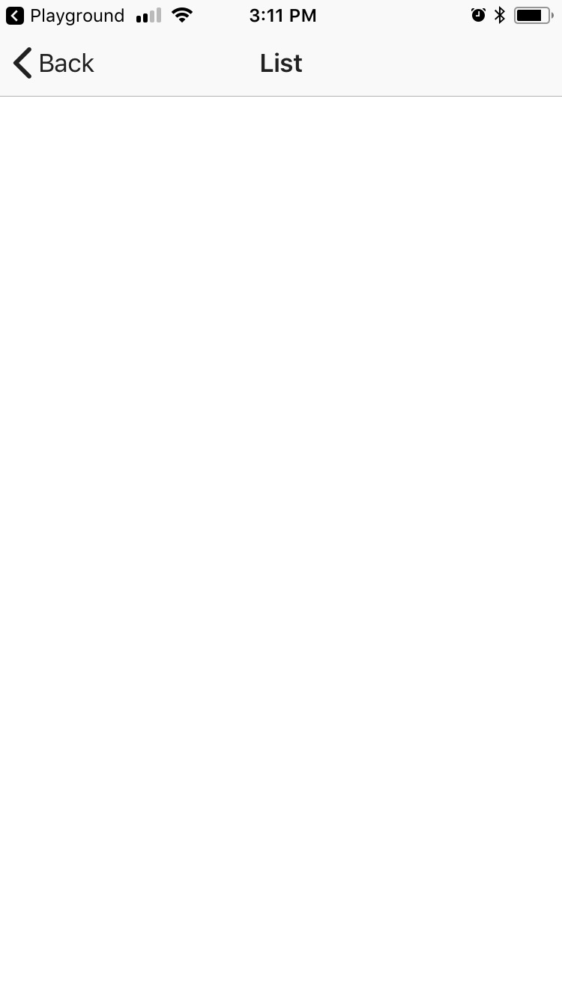
This concludes the exercise.
Nice work! You've just learned how to add navigation to your app. As a quick reminder, there are a few steps to take:
app.module.ts file)(tap)="onTapFunction()"RouterExtensions into the originating component's class codeRouterExtensions instance into the originating component's constructorapp-routing.module.ts file Yeah, we know, it's a lot of code jsut to navigate, but that's the Angular way ;-)
In the final part of this chapter, you'll learn how to use NativeScript's Action Bar.
Action Bar The Action Bar is a UI element that controls the upper area of the screen, allowing you to create (or customize) a "header" of the page.
Here's the area of the page we're going to modify:
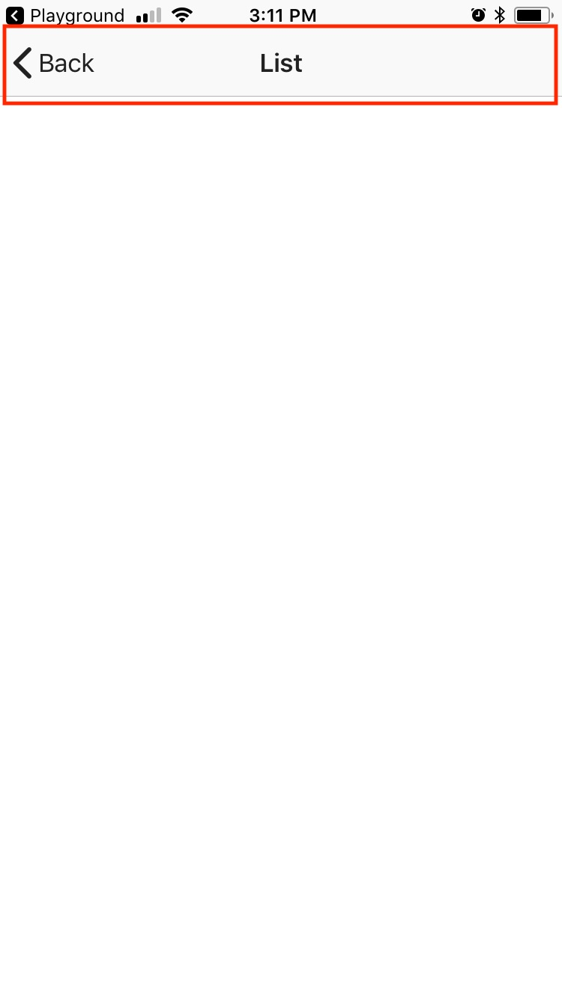
Action Bars are a versatile UI element in NativeScript, and you can use them to customize your app in various ways, including: navigation to the previous page, header icons, and page title/headings. We're not going to dive into the intimate details of Action Bars, so if you're interested in learning more, check out the official documentation.
Now that you know a little bit about the action Now that you can navigate to the List page, let's dive in and customize its Action Bar.
In this exercise, you'll be modifying the List component's Action Bar (ever so slightly) to change the header text of the List page.
Earlier in this chapter, you created the List component, and left the UI markup alone. Open the list.component.html file again and review it's contents. It should look similar to:
<ActionBar title="List" class="action-bar">
</ActionBar>
<ScrollView class="page">
<StackLayout class="home-panel">
<!--Add your page content here-->
</StackLayout>
</ScrollView>
As shown in the markup above, an Action Bar can be customized by adding a title attribute. The title attribute is straight-forward and sets the title of the page. The action-bar class name helps to style it to match your overall app theme's and applies default styles using the NativeScript Theme plugin.
Theme Details For more information about styling the Action Bar with the Theme plugin, check out the official documentation.
As for the markup following the Action Bar, ignore it. You'll be replacing it later.
Let's make a simple modificaiton to the Action Bar and update the title.
Change the title to "SpaceX Launches" or something equally appropriate:
<ActionBar title="SpaceX Launches" class="action-bar">
</ActionBar>
Refresh the app on your mobile device and you shoudl see something similar on the List page:
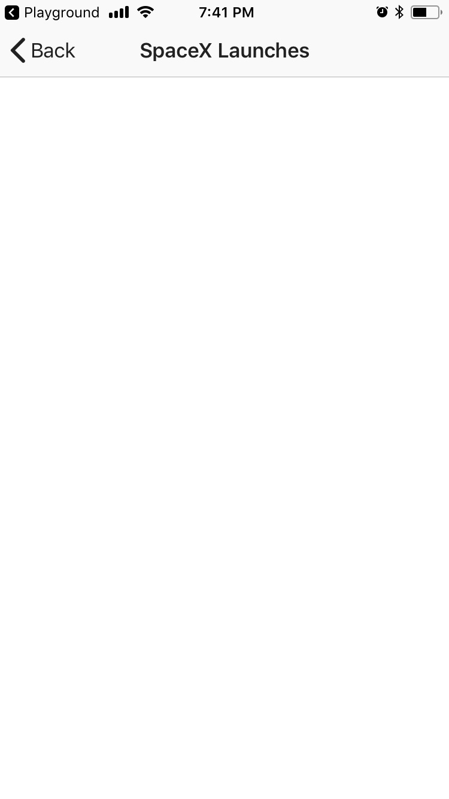
NOTE This was a simple example on using an Action Bar. If you're in for a challenge, try adding an icon to the Action Bar, customizing the background color, or changing the back button icon. There are a ton of online resources for customizing the Action Bar in NativeScript. Let me Google that for you.
This concludes the exercise.
This concludes the chapter.
Now that you know how to navigate between different views, you can work on making the list component more complex by displaying data. In this chapter you will learn about two new NativeScript elements:
ListViewTabViewAs you already know, the NativeScript playground provides numerous components you can drag and drop into your project. Go ahead and find the ListView component in the list of components and drag it inside the stack layout.
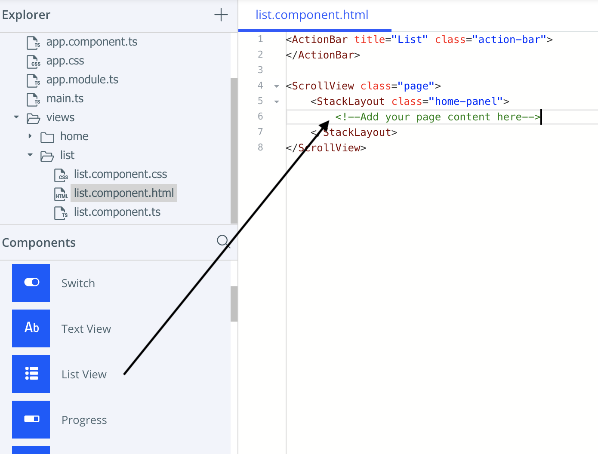
And you're done! you created a list view! Just kidding, but the playground does make it easy to get started learning NativeScript components. Go ahead and save your project and take a look at your app in preview.
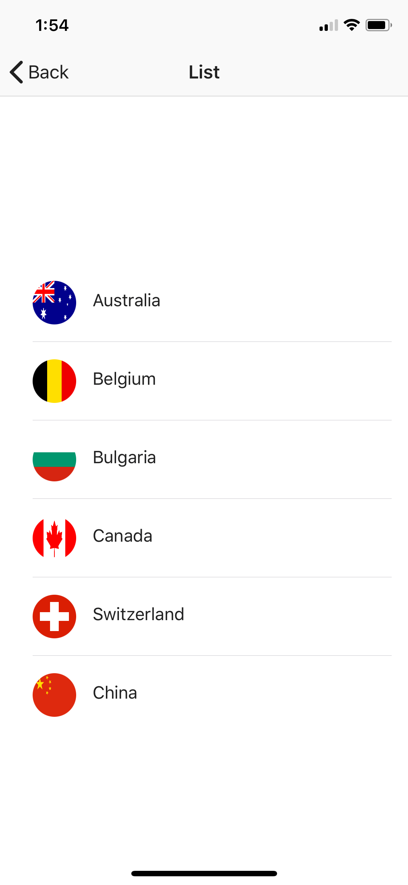
You may have noticed that there is data showing up. That's because when you drag a component in the playground it scaffolds out a lot of code for you. Take a look at list.component.ts and you will see the code that is generating the data in the ListView that you drag-and-dropped.
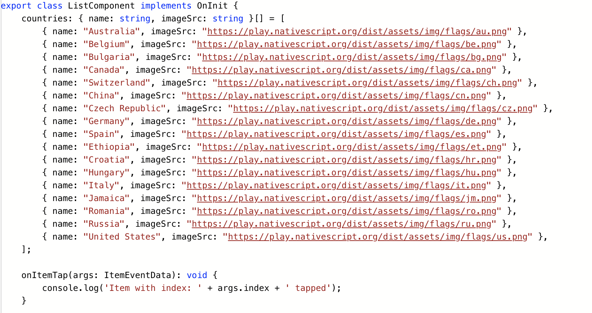
Before we replace this code, let's just back over the the view code and update it a bit. Replace the current ScrollView and StackLayout with a single StackLayout containing a Label and ListView.
<StackLayout class="page">
<Label class="h2 text-center" text="Upcoming Launches"></Label>
<ListView [items]="launches" class="list-group">
<ng-template let-item="item">
<GridLayout rows="*, *, *" columns="auto, *" [nsRouterLink]="['/detail', item.flight_number]" class="list-group-item">
<Image row="0" col="0" rowSpan="3" [src]="item.links.mission_patch" class="img-circle"></Image>
<Label row="0" col="1" [text]="item.rocket.rocket_name"></Label>
<Label row="1" col="1" [text]="item.launch_date_utc"></Label>
<Label row="2" col="1" textWrap="true" [text]="item.launch_site.site_name_long"></Label>
</GridLayout>
</ng-template>
</ListView>
</StackLayout>
Let's talk about the ListView in more depth. We're using the Angular syntax to bind the items in the ListView to a collection of elements called launches:
<ListView [items]="launches" class="list-group">
When using the ListView component we typically define a template.
<ng-template let-item="item">
<GridLayout rows="*, *, *" columns="auto, *" class="list-group-item">
<Image row="0" col="0" rowSpan="3" [src]="item.links.mission_patch" class="img-circle"></Image>
<Label row="0" col="1" [text]="item.rocket.rocket_name"></Label>
<Label row="1" col="1" [text]="item.launch_date_utc"></Label>
<Label row="2" col="1" textWrap="true" [text]="item.launch_site.site_name_long"></Label>
</GridLayout>
</ng-template>
Mauris tempor facilisis accumsan. Mauris vitae iaculis risus. Mauris volutpat suscipit neque non bibendum. Phasellus non fringilla enim. Aliquam tempor quam vel ligula porta convallis. In blandit dictum tempus. Nunc at pulvinar justo. Aliquam eu mi eros. Nunc sit amet tellus non lorem malesuada tempus. Vestibulum nunc magna, varius ut aliquam non, fermentum sodales metus. Aliquam sit amet pulvinar lacus. Sed fringilla placerat tempor. Pellentesque id elementum nibh. Interdum et malesuada fames ac ante ipsum primis in faucibus. Donec laoreet, ex eget vulputate tincidunt, enim nisi ullamcorper urna, at scelerisque tellus mi sit amet nisi. Duis ac risus ac odio efficitur dignissim vitae dapibus purus.
Cras massa nulla, feugiat eu pretium in, tempor nec nulla. Nullam vel lobortis felis. Cras varius iaculis ornare. Ut at nisl sit amet leo pulvinar iaculis non ut purus. Morbi luctus magna sed condimentum cursus. Ut accumsan enim ligula, vitae dapibus odio blandit quis. Sed auctor ex non scelerisque vulputate. Nunc feugiat lobortis nisl consequat consectetur. Vivamus consequat sem id consectetur varius. Nam nec erat id est interdum venenatis eu eu felis. Suspendisse potenti. Donec non sapien in est maximus cursus eget eget nunc. Maecenas congue sapien ut tempor facilisis.
Donec nisi magna, vehicula et purus eget, blandit suscipit tellus. Quisque lobortis augue at fringilla ullamcorper. Integer mattis diam eget augue suscipit, a malesuada mauris bibendum. Phasellus venenatis elit in semper hendrerit. Nunc tincidunt lectus in mauris facilisis, et laoreet metus aliquet. Mauris at hendrerit turpis, at semper mi. Suspendisse vel arcu nulla. Nullam scelerisque consequat molestie. Curabitur sit amet porta odio. Morbi lacinia vel tortor eu fringilla.
Mauris tempor facilisis accumsan. Mauris vitae iaculis risus. Mauris volutpat suscipit neque non bibendum. Phasellus non fringilla enim. Aliquam tempor quam vel ligula porta convallis. In blandit dictum tempus. Nunc at pulvinar justo. Aliquam eu mi eros. Nunc sit amet tellus non lorem malesuada tempus. Vestibulum nunc magna, varius ut aliquam non, fermentum sodales metus. Aliquam sit amet pulvinar lacus. Sed fringilla placerat tempor. Pellentesque id elementum nibh. Interdum et malesuada fames ac ante ipsum primis in faucibus. Donec laoreet, ex eget vulputate tincidunt, enim nisi ullamcorper urna, at scelerisque tellus mi sit amet nisi. Duis ac risus ac odio efficitur dignissim vitae dapibus purus.
Cras massa nulla, feugiat eu pretium in, tempor nec nulla. Nullam vel lobortis felis. Cras varius iaculis ornare. Ut at nisl sit amet leo pulvinar iaculis non ut purus. Morbi luctus magna sed condimentum cursus. Ut accumsan enim ligula, vitae dapibus odio blandit quis. Sed auctor ex non scelerisque vulputate. Nunc feugiat lobortis nisl consequat consectetur. Vivamus consequat sem id consectetur varius. Nam nec erat id est interdum venenatis eu eu felis. Suspendisse potenti. Donec non sapien in est maximus cursus eget eget nunc. Maecenas congue sapien ut tempor facilisis.
Donec nisi magna, vehicula et purus eget, blandit suscipit tellus. Quisque lobortis augue at fringilla ullamcorper. Integer mattis diam eget augue suscipit, a malesuada mauris bibendum. Phasellus venenatis elit in semper hendrerit. Nunc tincidunt lectus in mauris facilisis, et laoreet metus aliquet. Mauris at hendrerit turpis, at semper mi. Suspendisse vel arcu nulla. Nullam scelerisque consequat molestie. Curabitur sit amet porta odio. Morbi lacinia vel tortor eu fringilla.
Mauris tempor facilisis accumsan. Mauris vitae iaculis risus. Mauris volutpat suscipit neque non bibendum. Phasellus non fringilla enim. Aliquam tempor quam vel ligula porta convallis. In blandit dictum tempus. Nunc at pulvinar justo. Aliquam eu mi eros. Nunc sit amet tellus non lorem malesuada tempus. Vestibulum nunc magna, varius ut aliquam non, fermentum sodales metus. Aliquam sit amet pulvinar lacus. Sed fringilla placerat tempor. Pellentesque id elementum nibh. Interdum et malesuada fames ac ante ipsum primis in faucibus. Donec laoreet, ex eget vulputate tincidunt, enim nisi ullamcorper urna, at scelerisque tellus mi sit amet nisi. Duis ac risus ac odio efficitur dignissim vitae dapibus purus.
Cras massa nulla, feugiat eu pretium in, tempor nec nulla. Nullam vel lobortis felis. Cras varius iaculis ornare. Ut at nisl sit amet leo pulvinar iaculis non ut purus. Morbi luctus magna sed condimentum cursus. Ut accumsan enim ligula, vitae dapibus odio blandit quis. Sed auctor ex non scelerisque vulputate. Nunc feugiat lobortis nisl consequat consectetur. Vivamus consequat sem id consectetur varius. Nam nec erat id est interdum venenatis eu eu felis. Suspendisse potenti. Donec non sapien in est maximus cursus eget eget nunc. Maecenas congue sapien ut tempor facilisis.